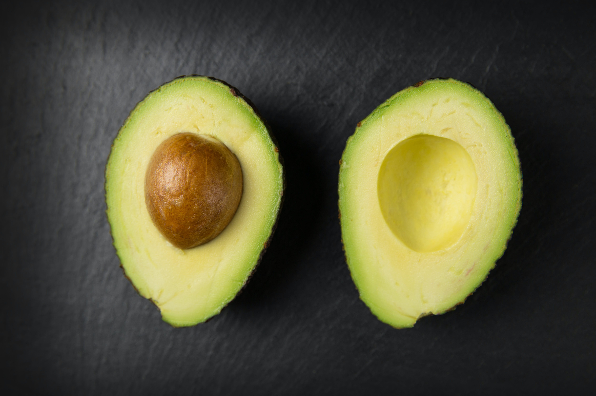

Alguns benefícios do abacate para a saúde são ajudar a hidratar e a manter a saúde da pele e do cabelo, já que possui vitaminas do complexo B e vitamina E. Além disso, o abacate também possui gorduras saudáveis, como gorduras monoinsaturadas e poli-insaturadas, que possuem ação antioxidante, ajudando a diminuir o colesterol e a pressão arterial, cuidando da saúde do coração.
Essa fruta pode ser incorporada em dietas para perder peso e por pessoas que possuem diabetes, já que é rica em fibras que ajudam a aumentar a sensação de saciedade e a regular a absorção de açúcares a nível intestinal. No entanto, o abacate deve ser consumido em pequenas porções devido ao fato de ser uma fruta muito calórica.
O abacate pode ser consumido ao natural ou adicionado em saladas, vitaminas e cremes. Já o caroço do abacate pode ser consumido para fins medicinais, no preparo de chás e tinturas. Saiba melhor para que serve o caroço de abacate.
Os principais benefícios do Abacate
- 1. Previne o envelhecimento precoce: Os benefícios do abacate para a pele são principalmente combater estrias, rugas e celulite por ser rico em vitamina C, que ajuda na metabolização do colágeno, substância que dá firmeza à pele. Além disso, essa fruta também tem antioxidantes que ajudam a proteger e a evitar o envelhecimento das células da pele, conferindo maior elasticidade e deixando a aparência mais bonita e saudável.
- 2. Favorece o ganho de massa muscular: Quando consumido antes da atividade física, o abacate ajuda na formação de massa muscular, pois é rico em gorduras boas, o que proporciona energia ao organismo para realizar o treino, além de fornecer proteínas que favorecem a recuperação do músculo. Essa fruta também é rica em magnésio, um mineral importante para a contração muscular, e potássio, que ajuda a combater a fadiga e a evitar as cãibras durante o treino.
- 3. Fornece ácido fólico: O abacate é rico em ácido fólico e, por isso, o seu consumo regular ajuda a estimular a formação de células sanguíneas, como hemácias, plaquetas e glóbulos brancos, prevenindo e melhorando a anemia. Além disso, é uma excelente opção para ser incluída na alimentação de mulheres que pretendem engravidar ou que estão no primeiro trimestre de gravidez, pois o ácido fólico é uma vitamina que participa na formação do sistema nervoso do bebê, prevenindo o surgimento de algumas doenças congênitas, como a anencefalia e a espinha bífida.
- 4. Aumenta a hidratação e brilho do cabelo: Quando utilizado em máscaras para o cabelo, o abacate aumenta a hidratação dos fios e favorece o seu crescimento. Isso acontece devido ao fato de ser uma fruta rica em gorduras, vitaminas do complexo B e E, fazendo com que o cabelo fique mais brilhoso e saudável.
- 5. Ajuda a emagrecer: O abacate é rico em fibras, principalmente insolúveis, fornecendo 3 gramas de fibras por cada 100 gramas de fruta. As fibras permitem controlar o apetite e evitar o consumo excessivo de alimentos, já que aumenta a sensação de saciedade e regula o açúcar no sangue. Além disso, também possui vitaminas do complexo B, que são necessárias para o bom funcionamento do metabolismo. No entanto, por ser rica em gorduras, o abacate possui muitas calorias, sendo recomendado que seja incluído na alimentação em pequenas porções.
- 6. Combate a prisão de ventre: O abacate, por ser rico em fibras, também ajuda a combater a prisão de ventre, já que aumenta o volume das fezes e favorece o trânsito intestinal. Além disso, é também importante que exista aumento do consumo de água para que as fezes fiquem mais hidratadas e suaves, favorecendo a sua saída.
- 7. Melhora o funcionamento cerebral: O principal benefício do abacate para o cérebro é melhorar a capacidade de memória, pois o ômega 3 estimula a circulação sanguínea e aumentar a capacidade de concentração. Além disso, por ser rico em ácido fólico e magnésio, também ajuda na prevenção da depressão, demência e Alzheimer, pois participam na síntese de neurotransmissores que ajudam a melhorar não só a memória, mas também a concentração e a motivação.
- 8. Evita doenças cardíacas: O abacate, por ser uma fruta rica em fitoesterois provenientes das gorduras poli-insaturadas e monoinsaturadas, ajuda a evitar o risco de doenças cardíacas, reduzindo o colesterol total, os triglicerídeos e o colesterol "mau", o LDL. Além disso, o abacate também favorece a formação do colesterol "bom", o HDL, evitando o acúmulo de placas de gordura nasartérias e promovendo a saúde do coração.
- 9. Previne o câncer: Devido ao seu teor de antioxidantes como o ômega-3 e vitaminas C, A e E, o consumo regular de abacate ajuda a neutralizar a formação de radicais livres no organismo e diminuir o processo de estresse oxidativo. Além disso, o ácido oleico, um tipo de gordura monoinsaturada presente no abacate, exerce efeito anti-inflamatório eanticancerígeno, pois pode induzir a morte das células tumorais, diminuindo, assim, o risco de câncer.
- 10. Controla a pressão arterial: O abacate possui boas quantidades de potássio e magnésio, minerais importantes que contribuem para reduzir a pressão arterial, uma vez que o potássio favorece a eliminação do sódio através da urina e o magnésio ajuda a aumentar a produção de óxido nítrico, um composto que ajuda a relaxar os vasos sanguíneos.
- 11. Ajudar a regular o açúcar no sangue: O abacate é rico em gorduras boas, além de ser baixo em carboidratos e com boa quantidade de fibras, o que a torna uma excelente fruta para ser consumida tanto por pessoas que possuem pré-diabetes quanto por pessoas que têm diabetes, já que ajuda a regular a glicemia e a evitar que fique elevada.
Tabela de informação nutricional
A tabela contém a informação nutricional para cada 100 g de Abacate
| Componentes | Quantidade por 100 g de abacate |
| Energia | 114 calorias |
| Proteínas | 1,1 g |
| Carboidratos | 2,3 g |
| Gorduras totais | 10,5 g |
| Gorduras monoinsaturadas | 6,5 g |
| Gorduras poli-insaturadas | 1,2 g |
| Ácido linoleico | 1,1 g |
| Gorduras saturadas | 2,2 g |
| Fibras | 3 g |
| Vitamina A | 5 mcg |
| Vitamina C | 3 mg |
| Vitamina E | 2,1 mg |
| Vitamina B1 | 0,1 mg |
| Vitamina B2 | 0,17 mg |
| Vitamina B3 | 1,1 mg |
| Vitamina B6 | 0,3 mg |
| Folatos | 11 mcg |
| Potássio | 330 mg |
| Fósforo | 36 mg |
| Cálcio | 4 mg |
| Magnésio | 21 mg |
| Ferro | 0,3 mg |